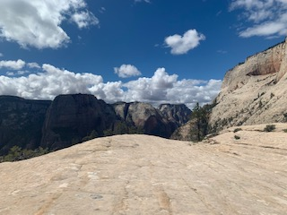
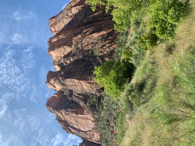
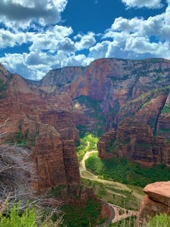

Allow me to introduce myself, I go by the name Michael, my friends call me Mike. I am a 20 year old coding student at LaunchCode St.louis, Missouri. Today you will be afforded the possibilty of joing me on my trip to Utah. The land of beautiful mountains, and 3.2 beer. Before embarking with me I ask you keep an open mind, as some of the events partaking can be gut wrenching. Stay tuned to learn thrills and dangers of Angels Landing, the wonder and awe of the Grand Canyon.
To start on this journey we must first start with one word, travel. I myself am not a huge fan of travel, which is why a 3 hour drive and 3 hour plane ride were the perfect start to my trip. In the past when Ive traveled ive simply taken my suit cases, phone and headphones. This time however, I was much better prepared. I spent 2 hours the night before the big day downloading movies and getting my mind right for what would surely be a no good day. When I took my seat on the plane I remebered there is a shortage of privacy between you and the other flyers. Which is why haveing only downloading rated R movies was not the best idea. I quickly turned off one movie after the opening scene was not the most pleasent. However I settled on The zodiac, a movie about a vicuous killer. The movie luckily was not very gory and worked perfect for the flight. Arriving in vegas and moving on to utah was as youd expect a very long and boring drive.
The first day in Utah my family and I headed to Zion National Park to conquer the Angels Landing trail. As we headed up the mountain one thought came to mind, "The air is very thin here". We procceded any ways, Angels Landing is known to be a difficult and dangerous trail. After climbing 2.3 miles and collecting our second winds, it felt as if victory was close. We were wrong, I looked up and saw a 20 flight climb of switch backs to acheive the delight of defating angels landing. I more than once expressed my desire to stop, and then saw 75 year olds treating the mountain like the red headed step child. Cant stop here I thought to myself and began walking harder. With sweat dripping offf my body and my back breaking I finally reached the top. I remeber asking myself if a climb like this was worth the view ultiamtley provided. My breath was taken away... from the climb. And also the view, although hiking has never been my cup of tea. There was no denying the beauty of this view.

In all my family and I hiked over 20 miles and walked more than 70,000 steps. Overall the trip brought great joy and great memories. A trip I would reccomend to any thrill seekers and veiw cravers. If you have any doubts about Angels Landing I would reccomend you stay at the first stop. On the second climb you hang on by chains drilled to the ground If this sounds like your thing be very cautios as the trail has claimed many lives over its exsistence. Including one of st.louis's own Barry Goldstein. Thank you for sticking around and reading my story on Utah. I hope you enjoyed reading it is much as I did writing it. Signing off Michael Eisenmayer